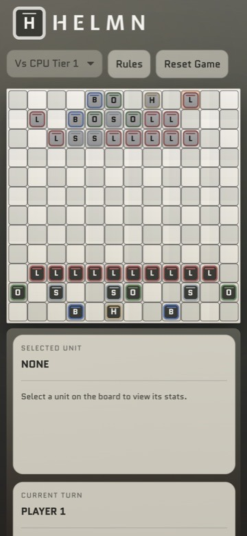
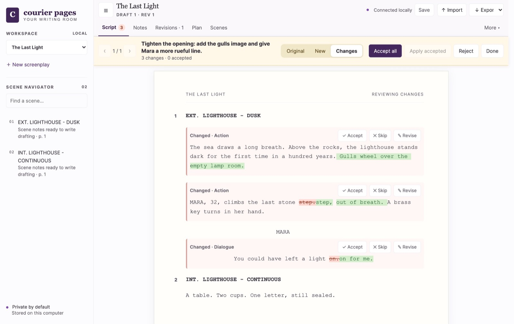
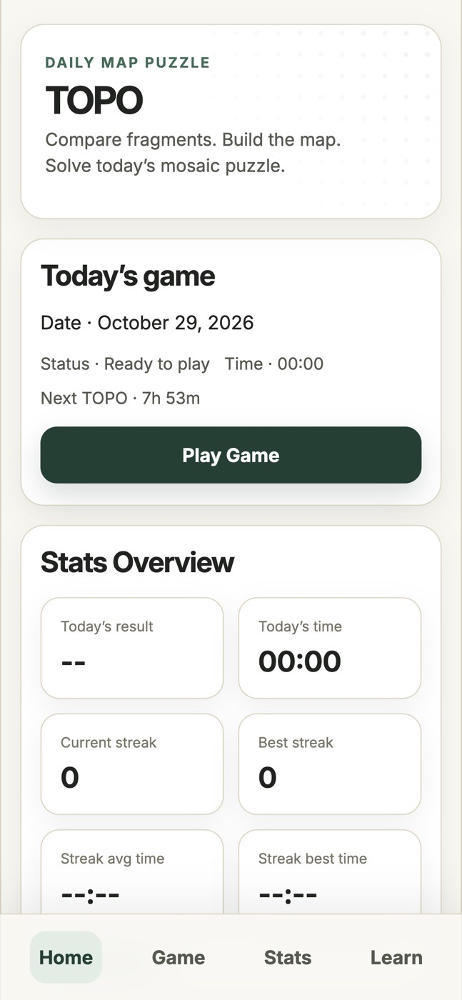
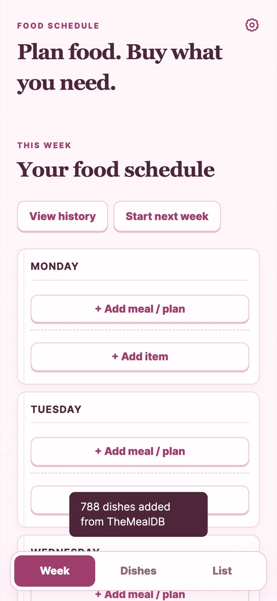
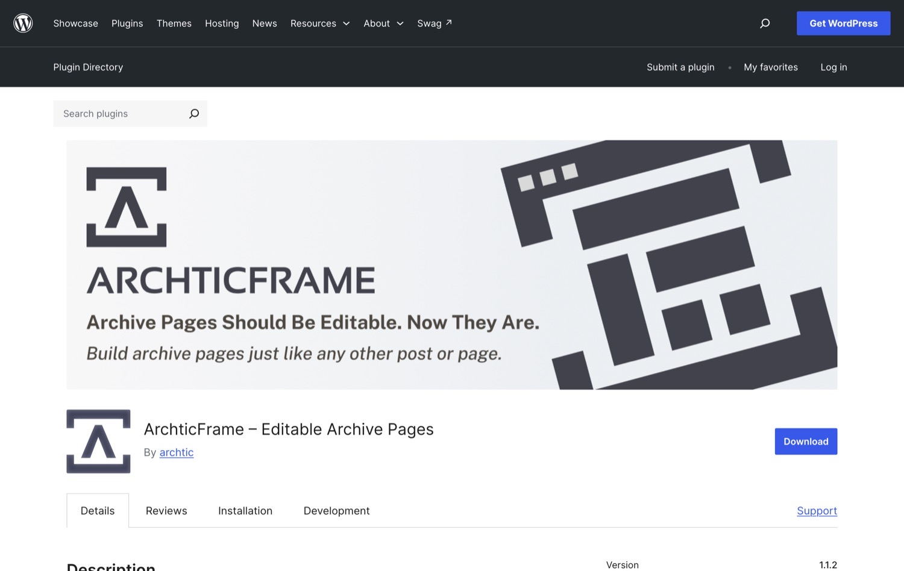

Software developer · Product builder
Ideas into working products.
I'm a software developer with eight years of commercial experience, the last seven at a white-label agency building custom WordPress sites, plugins and API integrations. Alongside that I build my own products, using Claude and Codex while I keep hold of the technical decisions, and I'm looking for a team where I can keep doing both.
8+ years commercial experience · PHP & WordPress · JavaScript, TypeScript & React · Custom plugins & API integrations

1 The AI proposes. Nothing is saved yet.
2 The writer accepts or skips each change.
The flagship project
Bringing a connected AI workflow to screenwriting.
I built a screenplay tool where AI can suggest but never change the script, and I enforced that in the system, not in the prompt. Courier Pages is a local screenplay workspace where AI can read the script and planning material, then propose revisions for the writer to review, accept or skip, and undo.
Try the review flow in the demo, then explore how I designed and built it.
Proposed changes
Your saved script
More work
Personal projects, put into practice.
Things I built to follow an interest or try something new. Each one works today and is still being improved. The code is on GitHub, except Helmn, which is in a private repository. See all projects →




ArchticFrame
A plugin that makes custom post type archive pages editable with Gutenberg blocks and ACF.
Commercial work
Eight years of client builds.
Custom WordPress and WooCommerce themes, plugins and integrations built at a white-label agency. Clients are anonymised. See all nine builds →
How I work
Research, build, learn, repeat.
AI tools help at every step, but the decisions stay mine: I set the direction, review what ships and go back to earlier steps as I learn.
- ResearchUnderstand the problem, investigate existing solutions and explore the technologies and approaches that could help.
- PlanDefine the goal, constraints and smallest useful version. Break the work into clear, manageable steps.
- BuildDevelop with Claude and Codex in small, reviewable changes, checking the approach as the implementation takes shape.
- ReviewAssess the code and behaviour, question assumptions and debug problems. Look for unnecessary complexity and opportunities to simplify.
- TestCheck that the solution works as intended, handles edge cases and preserves existing behaviour. Fix issues and test again.
- UseUse the result in practice to find friction, missing functionality and problems that checks alone might miss.
- ImproveTurn what I learn into focused changes, improving the experience, the code and the efficiency of my own workflow.
If we're a good fit, let's talk.
I’m looking for a place where I can keep building, explore what AI makes possible and help make an interesting product even better.